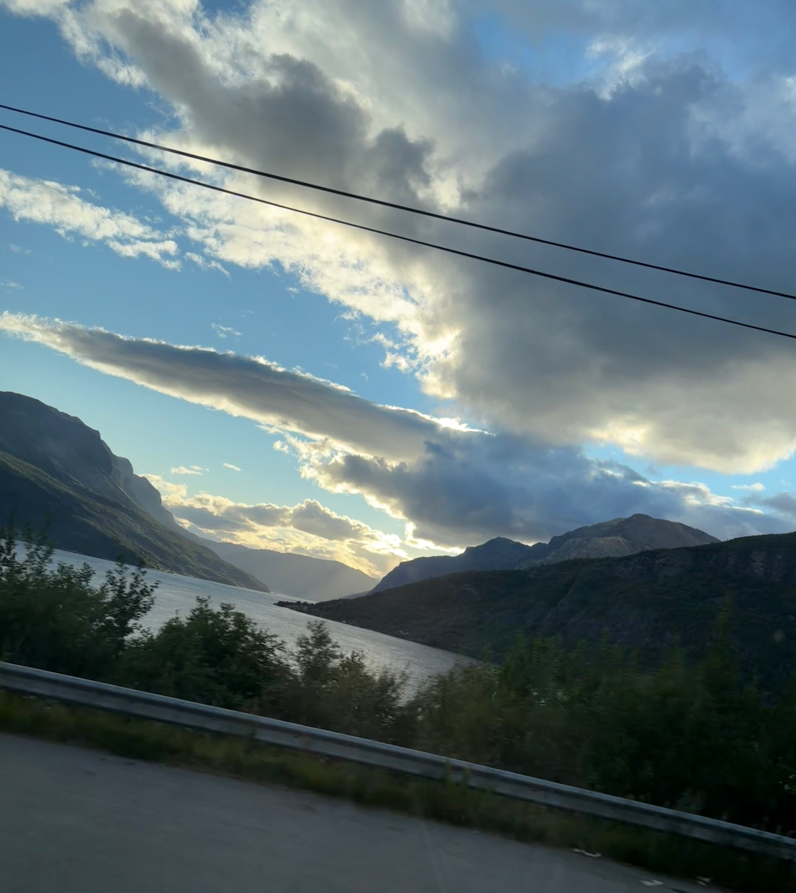
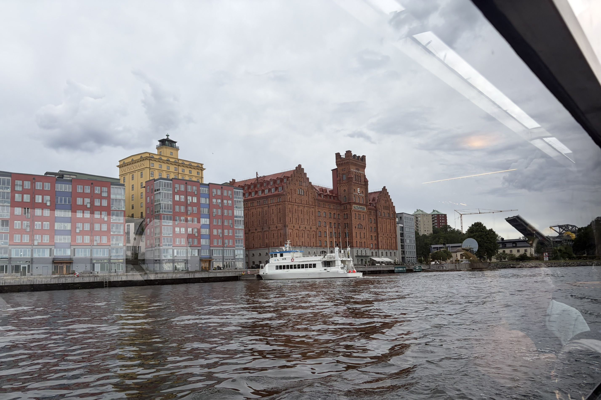
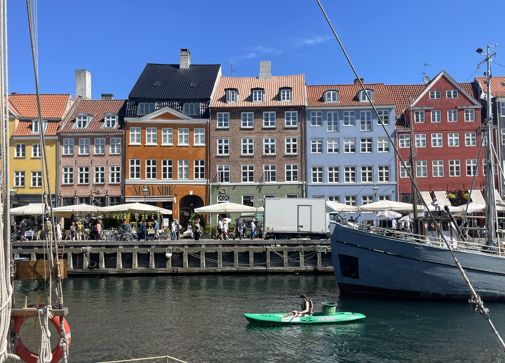
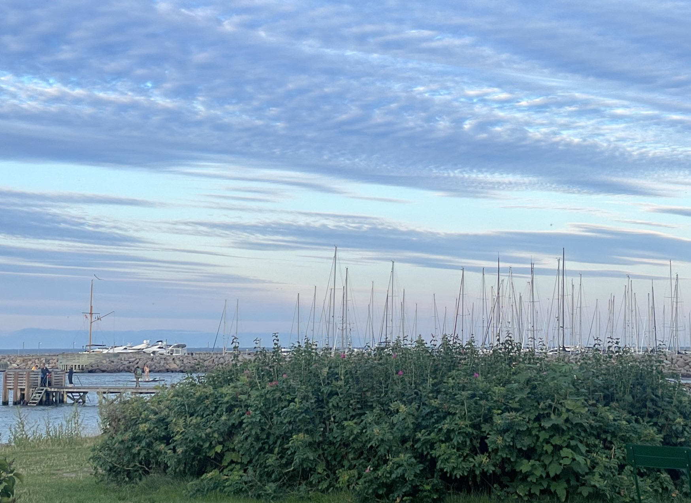

My-way of Scandinavia
I'm writing this from the road, on the way back home, somewhere between one town and the next, and I don't think I'm done thinking about it yet. The window keeps filling with the same three colors, grey rock, green water, dark wool, and the thought I'm chasing hasn't settled into anything I could call a conclusion. It's more like a thread I keep picking back up.

It started in Frogner Park in Oslo, standing at the foot of the Monolith. Gustav Vigeland gave the last twenty years of his life to that park, and the Monolith itself is a single hundred and eighty ton block of granite that three stonemasons spent fourteen winters carving into a hundred and twenty one bodies, climbing over one another toward something none of them reach. The men who cut it are barely remembered. Vigeland is the name on the plaque. A short walk away, in bronze, a woman, a man, and their children are welded into a wheel with no visible seam, no first hand and no last, just a ring of held wrists turning through what is clearly meant to be forever. He wasn't making an argument about sustainability. He was making an argument about time, about what a body owes the shape it leaves behind after it's gone. From „To be", to „being", to „will be"… I stood there long enough that the rest of my group had already moved on to the gift shop or a WC break before trip.
Then comes Dale, a village outside Bergen that most of the world only knows by way of a sweater. A waterfall runs through that town the way a spine runs through a back, and it has been turning the same mill's machines since 1879. In 1956, a Dale sweater went to the Winter Olympics in Cortina for the first time, and one has gone to nearly every Games since, a new pattern stitched into the same old wool, year after year, like a diary written in one language for a hundred and forty five years. What stayed with me wasn't the pattern at all. It was learning that these sweaters are built to be mended, unraveled at the elbow and rewoven, handed from a mother's shoulders to a daughter's, rather than thrown out the first time a thread gives. Somewhere in that village, wool is still being spun into something meant to survive the person who first wore it. Not resilient maybe like a human, but definitely durable…
Somewhere between Dale and the coast, there's also the railway that shouldn't exist. The line from Myrdal down to Flåm drops eight hundred and sixty six meters over twenty kilometers, and to make that drop survivable. Road was there as workers cut twenty tunnels into the mountain between 1923 and 1940, eighteen of them entirely by hand, pickaxe and dynamite, a meter of tunnel for roughly a month of a man's life. One of those tunnels turns a full hundred and eighty degrees inside the rock, doubling back on itself in total darkness so the train can lose height without losing its footing on a cliff face above the Aurlandsfjord, that long green arm of the Sognefjord that the whole valley seems to lean toward. Over six million man hours went into a track that carries you the last stretch in under an hour today. Halfway down, the train stops at Kjosfossen, a waterfall falling ninety three meters through its own permanent weather, and a woman in red (or maybe 2) appears on a rock at the base of it, dancing, playing the Huldra, the fairy of Norwegian folklore said to lure travelers off the marked path into the forest and out of their old lives entirely. I watched her vanish back into the spray and thought about how the same valley holds both of these completely straight faced: a tunnel that is nothing but measured hours, blast yield, and rock hardness, and a fairy nobody has ever needed to prove exists, a myth performed on schedule for tourists precisely because it refuses to be measured at all. One kind of impossible was solved with dynamite and patience. The other was never meant to be solved, only encountered.
And then the fish farms, cages riding low and quiet in water the color of pewter. Our guide mentioned, almost as an aside, that there's a rule about how much of each pen has to stay open water instead of fish, a number meant to guarantee the animals room enough to move like something alive rather than something stored. I won't pretend I know the regulation well enough to recite it back precisely, but roughly 25% fish, 75% open water. Not a slogan. A number, written into how the pens are built, meant to guarantee the fish enough space to live like fish or humane. The instinct underneath the guide's sentence is the part I kept turning over long after the pens had disappeared behind us: somewhere, someone decided that welfare had to be written down as a number small enough to be checked, not large enough to be merely believed.
There were sheep everywhere too, and not one of them fenced in. Every summer close to two million of them are let loose into Norway's mountains and forests, no shepherd, no schedule, sometimes not even a bell to find them by until their farmers come looking again around the first cold weeks of autumn. Only a sliver of the country's land is any good for crops, but almost half of it turns out to be exactly the kind of high, empty terrain a sheep was built for, so the sheep get months of grass and heather and whatever they can reach along the tree line, answerable to nobody. A valley away, the fish get their welfare guaranteed by supervision, a number someone checks. The sheep get theirs by being let go entirely, a kind of vacation with no return date fixed in advance. I kept turning that pair over. I'm still not sure which one is the more radical form of care.
I'll be on the road for a few more days, and I expect this thought will still be unfinished when the trip is. Some ideas aren't meant to be closed on a plane home. This one, I think, is going to keep unraveling and rewinding itself for a long while yet, the way wool does when it's built right.
Crossing into Sweden brought its own ritual almost immediately, fika. It isn't really a coffee break, more a small, national insistence that the day has to stop, sit down, and eat something sweet before it's allowed to continue. Nobody explained it to us as a rule, only demonstrated it, table after table, like something too obvious to need a name. I kept thinking how strange it is that a culture would build a deliberate pause into its own clock, on the same trip where I'd already watched three stonemasons spend fourteen winters on one block of granite. Different countries, maybe the same instinct: that some things are only allowed to happen slowly, on purpose.
More than once, in more than one town, we simply followed a yellow bus we had no ticket for and no real reason to trust. They run electric, quiet enough that you don't hear them coming until they're already there, and something about chasing one down a street I didn't recognize kept reminding me of Alice going after something small and quick she had no real business following down a hole. It never once led us wrong. I still don't know what to do with a piece of public transit that behaves like a character from a fairy tale, silent, a little bit magic, and somehow always right.
It was in Stockholm that our guide told us, almost as a footnote, how the country got its queen. In 1972 a German-Brazilian interpreter named Silvia Sommerlath was working the Munich Olympics, guiding dignitaries she'd never met before that summer, when Crown Prince Carl Gustaf was introduced to her and asked her to dinner a few hours later. He became king the following year, and by the law of the time that shouldn't have mattered to whether he could marry a commoner, except it did, quietly, for years, while the two of them slipped off to Switzerland and France to dodge photographers, and Silvia once wore a blonde wig through Stockholm just to walk around unrecognized. They married in 1976, and the night before the wedding, four musicians who were about to become inescapable debuted a new song in her honor at the Royal Opera, a song about a girl who was seventeen, though Silvia by then was thirty two, dancing queen, written for nobody in particular and performed for exactly one person on purpose.
An urban archipelago that reverses the myth, a place bearing a captive's name that sets every wandering spirit free. On the edge of this archipelago, near the headland of Danviken, sits a neighborhood built from scratch starting in 1994 on what used to be polluted industrial land, docks and small factories and whatever a city leaves behind once it outgrows its own harbor. Our guide walked us through it like she was showing off a friend's careful renovation: buildings partly heated by their own waste, water cleaned and returned before anyone downstream would notice it had left, electric trams standing in for another lane of traffic. It's still being finished today, three decades in, which says something on its own. Some of the things people build to last don't get built quickly, and nobody there seemed to treat that as a problem still waiting to be solved.
Somewhere on a river, dinner found us instead of the other way around. We parked our boat to shore to get our meals from the pier of the Pizzeria. Not all the needs were filled in the boat to serve the tourist cheap and fast solutions but we steered to quality. Our helmsman brought our boat to the shore where freshness can be well defined and hospitality was genuine. It felt like a small luxury built entirely out of convenience for someone else's afternoon, and I haven't stopped thinking about how much infrastructure quietly exists just to close a gap that only the people in the system itself delivering across it ever really notices.

Sweden also gave me the story of a man who built one of the largest companies alive out of matchsticks and stinginess. Ingvar Kamprad started IKEA at seventeen, at his uncle's kitchen table, and kept driving the same old Volvo and flying economy decades after he could have bought the airline outright. He asked employees to write on both sides of the paper, pocketed the salt and pepper packets from restaurants, and got his haircuts wherever they happened to be cheapest, and when someone once moved toward a taxi with him at the airport, he reportedly just said, we're taking the bus, no. His own testament, the one every new employee still reads on their first day, calls wastefulness close to a mortal sin and insists quality has to serve the customer, never the ego of whoever built the thing. I don't think humility is usually what people expect to find sitting at the root of an empire, and yet there it was, wearing the face of a man who never once, by any account I could find, felt the need to prove he'd made it.
Getting from Malmö to Copenhagen meant crossing a bridge that spends half its length pretending to be a tunnel, dropping under the Öresund so the ships passing above wouldn't have to slow down for us. Sixteen kilometers, more or less, only some of it ever visible from the train, and something about being swallowed underwater for a few minutes before surfacing in another country felt like the right way to leave one version of the trip behind and start another. By the time we came up on the other side, the language had shifted just enough to notice, the signage had changed shape, and Sweden was already somewhere behind us, folded into whatever the next few days were going to be instead.

They have a strange way of making trust look like infrastructure. Copenhagen alone holds something close to four hundred kilometers of bike lanes, more bicycles than people some years, and by the time we'd been in the city a day I had the distinct feeling the cars were the ones visiting, not the other way around. Nobody seemed to be making a great philosophical point about it. You simply stopped where you were supposed to stop, moved when you were supposed to move, and trusted the person beside you to do the same, the way you'd trust a stranger to hold a door. It made me think about how rarely we build systems around the assumption that people will behave well, and how much more often we build them around the possibility that they won't. Maybe a bike lane isn't really a road for bicycles at all. Maybe it's a small agreement between strangers that everyone gets somewhere without anyone else paying for the trip.
Then there was Lego, which felt at first like the least serious thing I'd run into all week. Ole Kirk Christiansen started the company in a small workshop in Billund in 1932, and named it from leg godt, Danish for play well, a detail I only learned afterward and haven't stopped repeating since. A brick, on its own, is almost nothing. You put it somewhere, change your mind, pull it apart, use it again, the same interlocking stud, patented in 1958, still gripping bricks made decades apart. The whole system runs on the idea that making something and taking it apart aren't opposites, just two halves of the same activity. A tower isn't a failure because you dismantled it. It simply finished being a tower. I wondered, walking out, how different growing up might feel if more of what we built came with that same permission, to be pulled apart without anyone calling it wasted.
Danish had its own word for stopping too, though this one had less to do with coffee and more to do with the room itself. Hygge gets translated as coziness so often it starts to sound like something a candle company invented, but the word is older than that, borrowed from a Norwegian term for comfort or consolation, folded into Danish centuries ago, long before anyone thought to export it as a lifestyle. Watching it happen in person, it stopped feeling decorative. The light stayed low because nobody needed it brighter. The chairs sat close because nobody wanted to raise their voice across a table. People stayed longer than planned because nothing in the room was built to make leaving feel like the obvious next step. It occurred to me that some cultures don't try to make people more productive at all. They just make the world around them a little less hostile to being human in it.

Granite carved slower than a human lifetime, wool spun to be repaired rather than replaced, living places connected for continuity of conversations, water measured out so a living thing has room to be alive in it. A sculptor, a spinning mill, and a fisheries regulator never sat down together, and yet standing in the wake of all in the same handful of days, I kept feeling the outline of a single hand at work under different tools, stone here, thread there, a number somewhere else, all of it reaching for the same thing: a way of making or tending something so that it keeps belonging to whoever, or whatever, comes after you. I don't have a name yet for what that hand is doing. I'm not sure it wants one as well.
I keep coming back to how much of what I saw wasn't really about the places at all, but about a kind of patience I don't think I've built into my own days yet. Sustainability, the way I'd always understood it, sounded like a target, a number to hit, a report to file. What I saw instead was smaller and slower than that, closer to a habit than a policy, the plain decision to make something repairable before making it impressive, to leave room for someone else to finish what you started, to trust a system enough to let it run without watching it constantly. I don't know exactly how that translates into a Monday, into the way I plan a project or write a line of code or answer an email, but I think it starts with resisting the urge to finish everything quickly just to feel finished. Maybe the thing worth bringing home isn't a souvenir at all, but a slower relationship with my own work, more mending than replacing, more trust than control, more room left open for whoever picks it up after me.